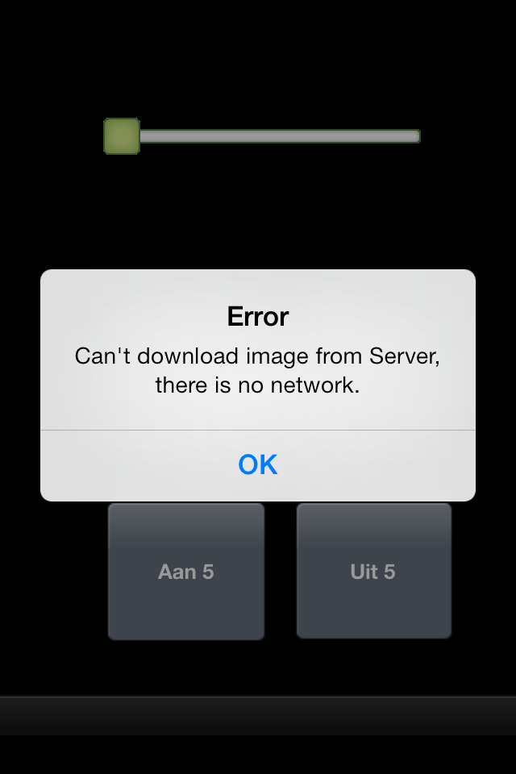

|
This page last changed on Nov 02, 2013 by richardrobert.
Hi,
I've been playing with OpenRemote designer, and got a Fibaro FSG211 switch switching on and off by using my iPhone; running OpenRemote via Ubuntu and using Aeon Labs Z-stick in the Serial API mode.
Locally, everything works as expected.
However, when using it via 3G a strange error appears. The panel opens, but I cannot use it. It takes on and about 1 minute before the error is displayed : Can't download image from Server, there is no network.
When I hit "OK" the button works as expected ; turning the FSG211 on and off!error.PNG! 
|
Are you using port forwarding or a VPN ?

Posted by ebariaux at Nov 04, 2013 09:36
|
|
Hi Eric
Port forwarding, thanks
Posted by richardrobert at Nov 04, 2013 09:54
|
|
Within another LAN the app works fine, no delay. Seems like it is only occurring when using 3G
Posted by richardrobert at Nov 04, 2013 14:00
|
|
hi Guys,
happens via VPN when connected via 3G too.
What I recognized:
When I open VPN (PPTP), I can see the server going green in settings so everything seems to be fine. But when I try to switch something I get exactly the error message Richard describes....
but when I then wait some seconds and when I can switch from screen to screen in my menu then the switching works fine too.
No idea why.
kind regards
Jakob
Posted by itchako at Jan 20, 2014 19:16
|
|
There are some weird checks left over in the code of the current iOS consoles, where it will not load images if the connection is over cellular and not Wifi. I suppose this was made to conserve bandwidth.
This will be changed when the next version of the console is ready (no date for that).
Posted by ebariaux at Jan 21, 2014 12:15
|
|
Eric,
I am currently having this issue. Any updates?
Posted by nbright at Sep 28, 2014 19:50
|
|
No, sorry. Haven't worked on iOS console for a while.
Posted by ebariaux at Oct 06, 2014 13:28
|
|
Hello Mr. Eric. I have the same problem on Ios APP using 3G network. Could you please let me know when will you have new update IOS app?
Posted by aqt at Aug 30, 2015 16:16
|
|
{kind=link}